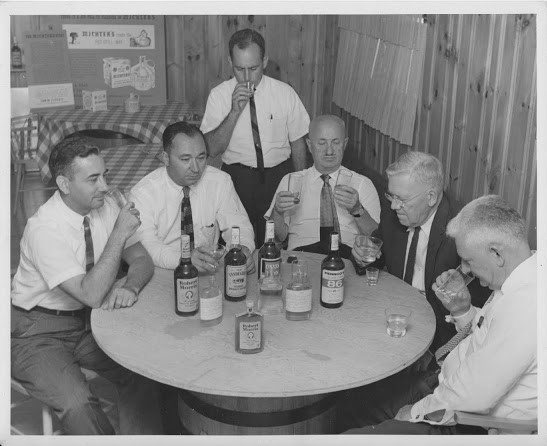

Whiskey Sip'd

(click here to jump to tasting notes)
(to the tune of "Harriet" from So I married an Axe Murderer)
Michter's. Sweet Michter's,
With your Barr-el Toast-ed,
And your Whisk-ey street cred
Now here's what went through my head!
I've been a fan of Michter's since the second I sipped the sweet Michter's American. So I just knew this would be right up my alley
There's much ado about the pronunciation of the name. Some say it with the 'ch' of cheese, some with a 'ck' of cocktail.
My money's on the latter. As the story goes, after the prohibition repeal, the distillery changed hands many times. The man responsible for the Michter's that we know and love, was a man named Lou Forman who, in the 1950's named it after his sons: Michael and Peter.
I take it as the 'ch' in Michael is pronounced followed by the 'ter' in Peter. You can decide for yourself.
The Look:
This has a wonderful caramel color. The kind that traps the light in the glass.
The Smell:
On the nose I'm getting pink popcorn, no joke. Specifically the pink popcorn you can get at the concession stand near that merry-go-round in San Francisco's Golden Gate Park.
The First Sip:
I get a real woodsy taste immediately, followed by a very ulifting honeysuckle. Then comes the vanilla notes. A small heat washes over your tongue, reminding you it's 86 proof.
Second Sip:
The second sip was sweeter, specifically on the lips.
The Remainder:
It developed into a kettle corn with almost a syrup after-taste, leaving a sweet lasting layer on the lips
Conclusion:
I dug it! Michter's Toasted Barrel was a lot sweeter than I anticipated. No doubt from the extra aging in the toasted, not charred, barrels. I feel it would pair delicously with
with a few carnitas tacos with plenty of lime.
Will drink again!!

Cocktails